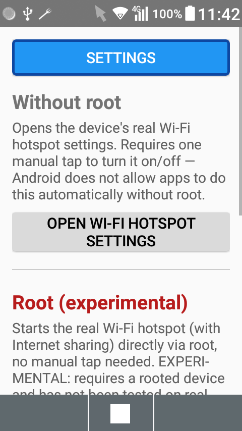
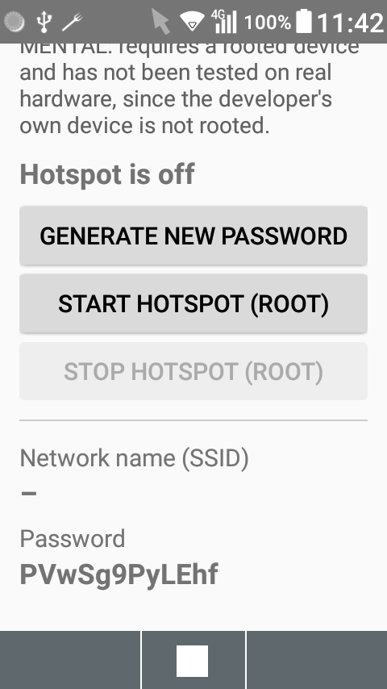
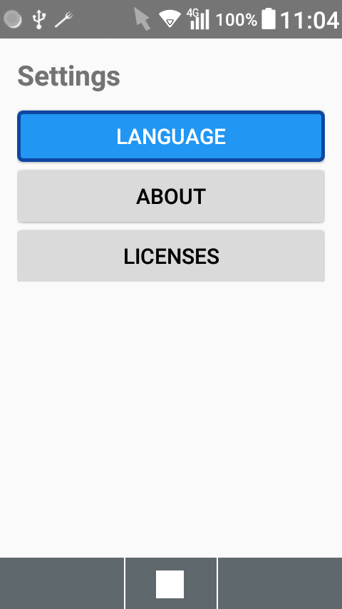

$ keitaihotspot
Wi-Fi hotspot control for flip phones — fully D-Pad navigable
KeitaiHotspot is a free, open-source Android app that helps you control your phone's real Wi-Fi hotspot (the one that shares your mobile Internet) without ever touching a touchscreen. Built specifically for Android-powered flip phones (feature phones) with physical keys and a D-Pad.

Main screen

Root section

Settings
$ why two sections?
Since Android 8, apps can only create a "local-only" hotspot that does not share Internet — an intentional platform restriction, not a bug. Actually toggling the real, Internet-sharing hotspot requires signature-level permissions reserved for the system, so the app is split into two clearly separated sections:
- Without root — opens the device's real hotspot settings directly, so you only need to tap the on/off switch yourself.
- Root (experimental) — starts/stops the real hotspot directly via root, no manual tap needed. Untested on real hardware, since the developer's own device is not rooted.
Some vendors also remove the hotspot screen from their Settings app's visible menu entirely — Kyocera does this on the developer's own test device. The activity still technically exists on the system, just without a reachable menu entry, so the "Without root" section launches it directly by component name instead.
$ features
- Without root: one-tap shortcut to the device's real hotspot settings
- Root (experimental): direct start/stop, custom password generation, QR code for quick connecting
- Fully navigable with a D-Pad — no touchscreen required
- Available in English, Deutsch and 日本語 (Japanese)
$ requirements
Android 8.0 (API 26) or later.
$ get it
[ Download APK (v1.0.0) ]Release-signed — installs fine for sideloading. See the release notes for details.
[ View source on GitHub ]$ license
Free software, licensed under the GNU General Public License v3. Third-party open-source libraries used are listed in THIRD_PARTY_LICENSES.md.